Simulate IID Data from a Wide Range of Distributions
simulate_IIDdata.RdGenerates independent and identically distributed (IID) random samples with flexibility and ease of control.
The function supports standard R random generators (e.g., rnorm, rpois),
external generator functions from all installed R packages
(e.g., \pkg{sn}, \pkg{mvtnorm}, \pkg{VGAM},\pkg{extraDistr}, \pkg{gamlss.dist}, \pkg{gamlss.dist}),
copula-based multivariate distributions (via \pkg{copula})
as well as user-defined custom generators (supplied via the generator argument).
User-supplied parameters override defaults produced by distr_spec().
Usage
simulate_IIDdata(
n,
distr_name,
distr_params = distr_spec(),
generator = NULL,
seed = NULL
)Arguments
- n
Integer (>0). Number of IID observations to simulate. Fractional values are rounded down to the nearest integer.
- distr_name
Character string specifying the target distribution. See Details for full information on aliases, parameter handling, and examples. Supported options (case-insensitive) include:
Base R distributions:
"normal","gaussian","binomial","poisson","uniform","gamma","beta","chisq", etc. See the full list of base R distributions at: https://stat.ethz.ch/R-manual/R-devel/library/stats/html/Distributions.htmlMultivariate distributions:
"mvnorm","mvt","mvst","mvsnorm".Copula-based generation:
"copula"→ see @details for usage.Custom generator:
"custom"→ requires providinggenerator.Explicit package-qualified functions: any
"pkg::fun"form (e.g.,"MASS::mvrnorm")External functions without package prefix: the simulator attempts to locate a matching function across all installed packages via
match.fun.allR.
- distr_params
Named list of distribution parameters, usually created with
distr_spec(). Can include an optional argumentdimrepresenting the dimension of the random variables. For multivariate distributions,dimmust either be supplied explicitly or be inferable from the user-supplied location, scale, or shape parameters (or from the 'copula' object ifdistr_name = "copula"). Ifdistr_paramsis not a list, it is interpreted as:The copula object if
distr_name = "copula".The dimension (
dim) ifdistr_nameis neither "copula" nor "custom".
- generator
A user-defined random generator function, used only when
distr_name = "custom". Must accept at least the argumentn, and return either a vector of lengthnor a matrix of dimensionn × dim).- seed
Optional integer. If provided, the RNG state is temporarily replaced with this seed, and restored upon exit.
Value
A numeric matrix (with class "IIDdata") with n rows and dim columns.
Each row is an IID observation of dimension dim.
Details
Copula-based simulations:
distr_paramsmust contain acopulaobject (from copula) and an optional listmarginsof lengthdim(>1). Each element ofmargins, if provided, must be a list containing -dist: univariate distribution name (e.g."norm"), -params: named list of distribution parameters. The simulator first draws \(U\) from the specified copula \(C\) and applies the appropriate quantile functions to obtain the final multivariate sample. Defaults: Ifdimis missing, it is inferred from the copula object; ifmarginsis missing, all margins are taken to be standard normal.Custom generators: Only arguments matching
generator's formal arguments are passed. Sample size is forwarded asn.External generators with specified r package: If
distr_nameis provided in the form"pkg::function", the simulator dynamically loads the specified function from the indicated package. An error is raised if the package is not installed.External generators without package prefix: If
distr_nameis not of the form"pkg::function", the function first looks for a base R random generator (e.g.,rnorm,rpois). If none is found, it searches all installed packages for a matching exported function, prependingrif needed (e.g.,norm→rnorm). An informative error is raised if no suitable function is found. Warning: naming conflicts across packages may lead to unexpected behavior.Sample-size detection: The function automatically detects
nornnwithin formal arguments. If neither exists,nis passed as the first positional argument (specifying the sample size).
Distribution name aliases:
The argument distr_name supports the following (case-insensitive) aliases for common distributions.
| Distribution | Aliases → Internal function | distr_params (with defaults) | Binomial |
| binomial, binom → rbinom | size = 1, prob = 0.5 | Poisson | poisson, pois → rpois |
| lambda = 1 | Normal | normal, gaussian, norm → rnorm | mean = 0, sd = 1 |
| Multivariate Normal | mvnorm, mvn → mvtnorm::rmvnorm | mean = rep(0, dim), sigma = diag(dim) | Multivariate Normal (Singular) |
| smvnorm, smvn → mgcv::rmvn | mu = rep(0, dim), V = diag(dim) | Multivariate t | mvt → mvtnorm::rmvt |
| sigma = diag(dim), df = 5, delta = rep(0, dim) | Multivariate t (Singular) | smvt → r.mvnt | mu = rep(0, dim), V = diag(dim), df = 5 |
| Skew-normal (univariate) | skewnorm, sn → sn::rsn | xi = 0, omega = 1, alpha = 0, tau = 0 | Skew-normal (multivariate) |
| mvsnorm, mvsn → sn::rmsn | xi = alpha = rep(0, dim), Omega = diag(dim), tau = 0 | Skew-t (univariate) | skewt, st → sn::rst |
| xi = 0, omega = 1, alpha = 0, nu = 5 | Skew-t (multivariate) | mvskewt, mvst → sn::rmst | xi = alpha = rep(0, dim), Omega = diag(dim), nu = 5 |
| Pareto (type I) | pareto, pareto_I → VGAM::rpareto | scale = 1, shape = 1 (k parameter) | Laplace |
Functions from external packages (e.g., sn::rmsn) may also be specified
without the package prefix if no naming conflict exists,
though this can lead to ambiguity or unexpected behavior.
Omitting the leading r is allowed for internal R function names
when the package name is not explicitly specified using ::.
See the CRAN Task View on Distributions
for a comprehensive list of R packages providing additional distributions,
all of which can be used within this simulator with suitable distr_name and distr_params.
Dependencies
Depending on the distribution specified in distr_name,
one or more of the following packages may be optionally required
(depending on the case):
copula – For copula-based generation (
distr_name = "copula"). CRAN: https://CRAN.R-project.org/package=copulamvtnorm – For multivariate normal (
"mvnorm", "mvt") and t distributions. CRAN: https://CRAN.R-project.org/package=mvtnormsn – For skew-normal and skew-t distributions (both univariate and multivariate:
"skewnorm", "skewt", "mvsnorm", "mvskewt"). CRAN: https://CRAN.R-project.org/package=snVGAM – For non-standard univariate distributions such as Pareto, Laplace, and others:
"pareto", "laplace". CRAN: https://CRAN.R-project.org/package=VGAMextraDistr – Provides additional discrete and continuous distributions (e.g., generalized beta, zero-inflated distributions). CRAN: https://CRAN.R-project.org/package=extraDistr
MASS – For distributions like negative binomial (
"MASS::rnegbin"). CRAN: https://CRAN.R-project.org/package=MASSAny other R package
"pkg"that provides a function specified via"pkg::fun"indistr_name. The function will attempt to dynamically load the specified function from the package.
References
Azzalini A, Capitanio A (2013). The Skew-Normal and Related Families Cambridge University Press. ISBN 978-1-107-02927-9. https://doi.org/10.1017/CBO9781139248891
Adcock C, Dias A, Salmon M (Eds) (2013). Copulae & Multivariate Probability Distributions in Finance Routledge. ISBN 978-0-415-81485-0. https://www.routledge.com/Copulae-and-Multivariate-Probability-Distributions-in-Finance/Adcock-Dias-Salmon/p/book/9780415814850
Durante F, Sempi C (2015). Principles of Copula Theory CRC Press. ISBN 978-1-439-88442-3. https://www.crcpress.com/Principles-of-Copula-Theory/Durante-Sempi/p/book/9781439884423
Genton MG (Ed) (2004). Skew-Elliptical Distributions and Their Applications: A Journey Beyond Normality Chapman & Hall / CRC Press. ISBN 978-0-415-36559-7. https://www.routledge.com/Skew-Elliptical-Distributions-and-Their-Applications-A-Journey-Beyond-Normality/Genton/p/book/9780367578312
Johnson NL, Kotz S, Balakrishnan N (1994). Continuous Univariate Distributions, Volume 1 (2nd ed.) Wiley. ISBN 978-0-471-58495-7. https://www.wiley.com/en-us/Continuous+Univariate+Distributions%2C+Volume+1%2C+2nd+Edition-p-9780471584957
Johnson NL, Kotz S, Balakrishnan N (1995). Continuous Univariate Distributions, Volume 2 (2nd ed.) Wiley. ISBN 978-0-471-58494-0. https://www.wiley.com/en-us/Continuous+Univariate+Distributions%2C+Volume+2%2C+2nd+Edition-p-9780471584940
Johnson NL, Kotz S, Balakrishnan N (1997). Discrete Multivariate Distributions Wiley. ISBN 978-0-471-12844-1. https://www.wiley.com/en-us/Discrete+Multivariate+Distributions-p-9780471128441
Johnson NL, Kotz S, Kemp AW (2005). Univariate Discrete Distributions (3rd ed.) Wiley. https://www.wiley.com/en-us/Univariate+Discrete+Distributions%2C+3rd+Edition-p-9780471712384
Kotz S, Balakrishnan N, Johnson NL (2000). Continuous Multivariate Distributions, Volume 1: Models & Applications (2nd ed.) Wiley. ISBN 978-0-471-18387-7. https://www.wiley.com/en-us/Continuous+Multivariate+Distributions%2C+Volume+1%3A+Models+and+Applications-p-9780471183877
Lai CD, Balakrishnan N (2002). Continuous Bivariate Distributions Springer. https://link.springer.com/book/10.1007/b101765
Nelsen RB (2006). An Introduction to Copulas (2nd ed.) Springer. https://link.springer.com/book/10.1007/0-387-28678-0
Examples
# A Basic Example
set.seed(123)
x <- simulate_IIDdata(500, "laplace")
mean(x); var(x); hist(x)
#> [1] 0.02118049
#> [1] 1.946664
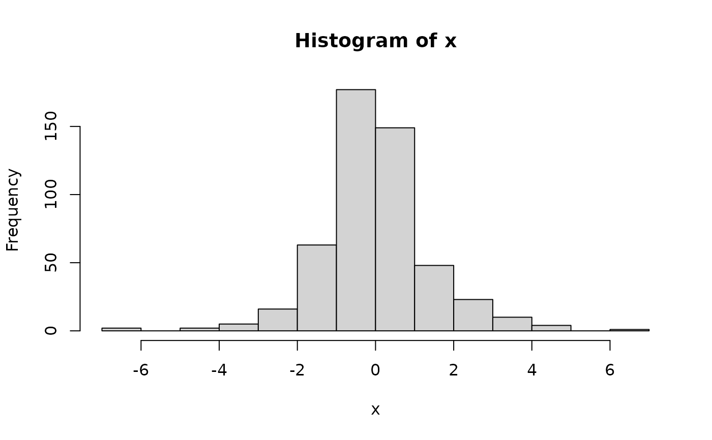
# From a recommended package (MASS)
x <- simulate_IIDdata(5, "MASS::rnegbin", list(mu = 5, theta = 2))
mean(x); var(x); hist(x)
#> [1] 7
#> [1] 41.5
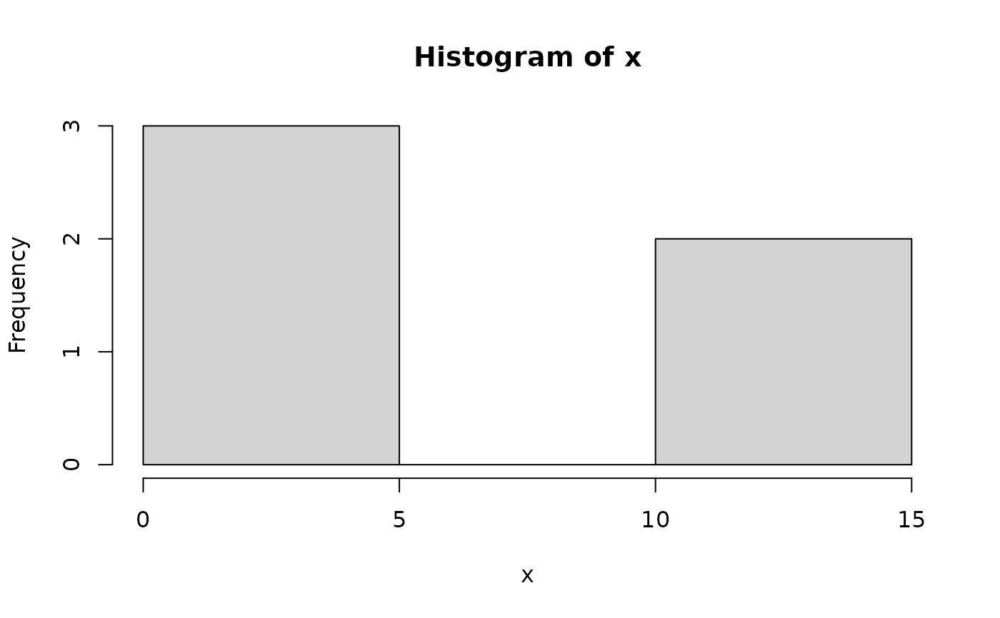
# Custom generator
my_custom <- function(n, min = 1, max = 100) sample(min:max, n, replace = TRUE)
x <- simulate_IIDdata(500, "custom", distr_params = list(min = 1, max = 10), generator = my_custom)
mean(x); var(x); plot(x)
#> [1] 5.762
#> [,1]
#> [1,] 8.013383
 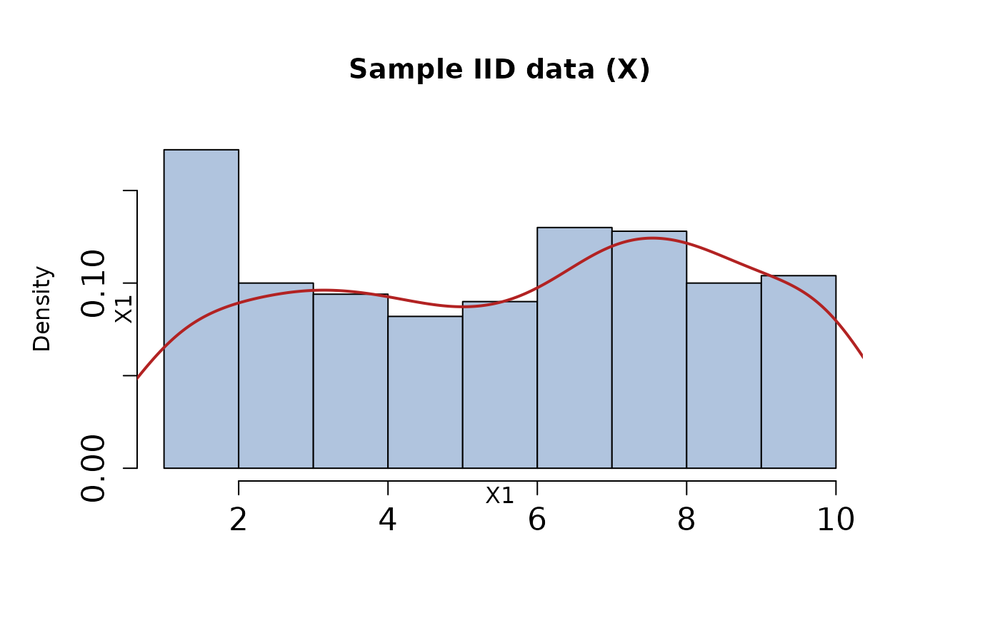
# Multivariate example
params <- distr_spec(dim = 3, mean = 1:3, sigma = diag(3))
x <- simulate_IIDdata(5, "mvnorm", params)
plot(x)
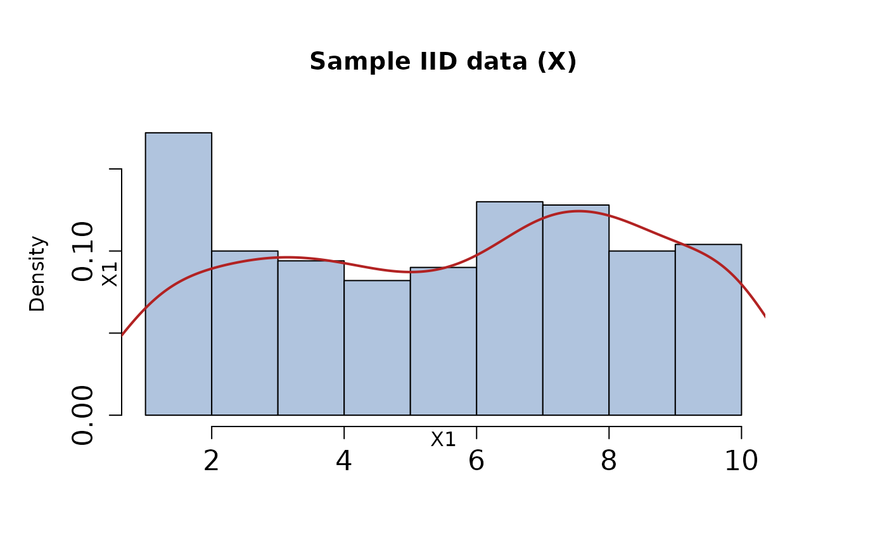
# Multivariate example
params <- distr_spec(dim = 3, mean = 1:3, sigma = diag(3))
x <- simulate_IIDdata(5, "mvnorm", params)
plot(x)
 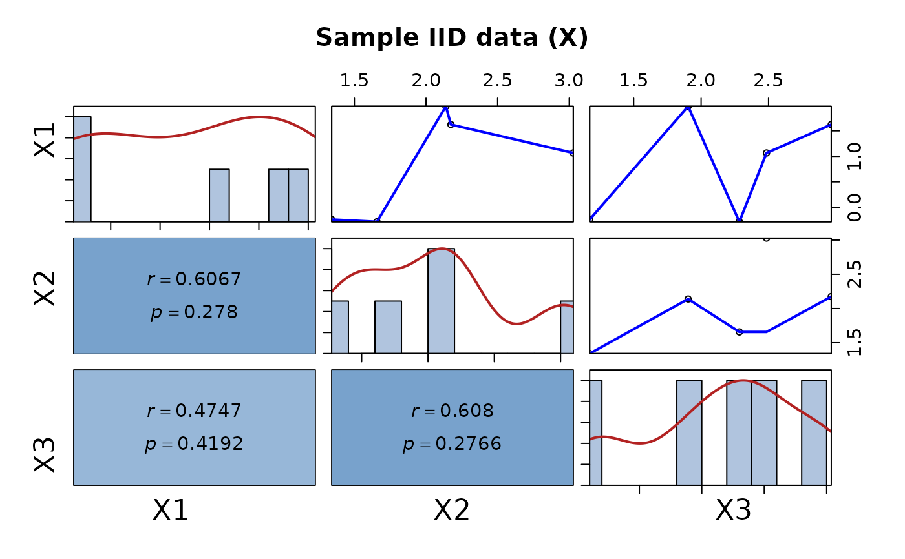
# Skew-normal (requires \pkg{sn})
if (requireNamespace("sn", quietly = TRUE)) {
x <- simulate_IIDdata(50, "skewnorm")
plot(x)
}
#> Warning: Recycling array of length 1 in array-vector arithmetic is deprecated.
#> Use c() or as.vector() instead.
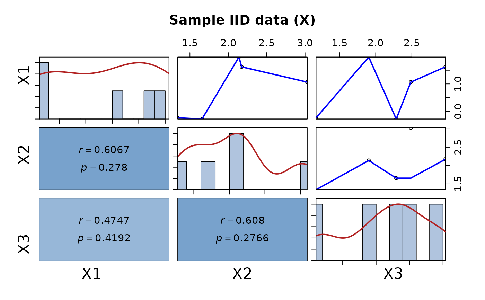
# Skew-normal (requires \pkg{sn})
if (requireNamespace("sn", quietly = TRUE)) {
x <- simulate_IIDdata(50, "skewnorm")
plot(x)
}
#> Warning: Recycling array of length 1 in array-vector arithmetic is deprecated.
#> Use c() or as.vector() instead.
 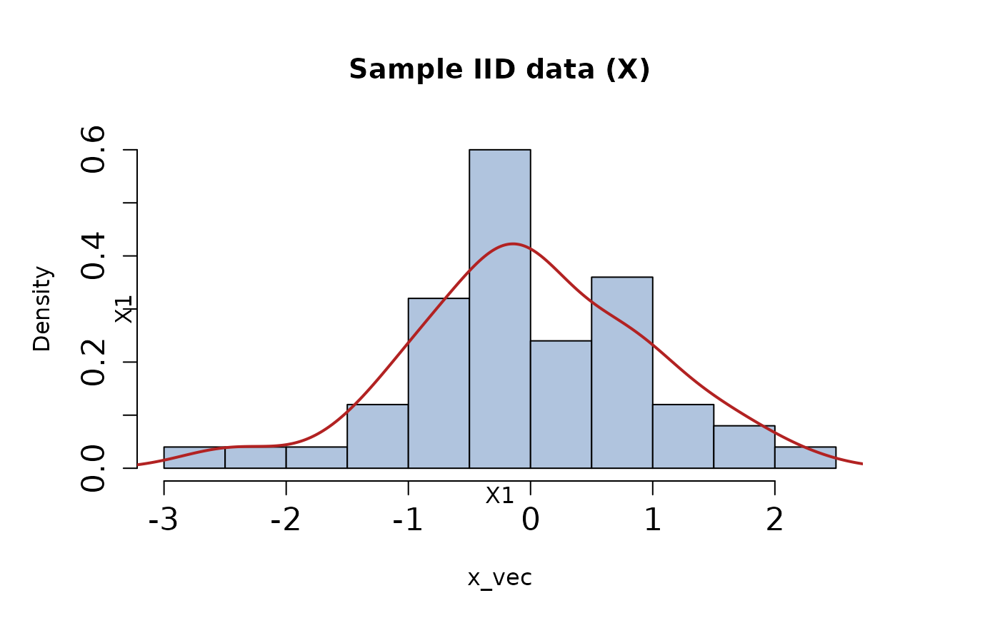
# Copula-based Examples
if (requireNamespace("copula", quietly = TRUE)) {
library(copula)
# Gaussian copula with Normal margins
cop <- normalCopula(param = 0.5, dim = 3)
margins <- list(
list(dist = "norm", params = list(mean = 0, sd = 1)),
list(dist = "norm", params = list(mean = 1, sd = 2)),
list(dist = "norm", params = list(mean = -1, sd = 0.5))
)
x<-simulate_IIDdata(5, "copula", list(dim = 3, copula = cop, margins = margins))
plot(x)
# Gumbel copula with mixed margins
gumbel_cop <- gumbelCopula(param = 2, dim = 4)
mixed_margins <- list(
list(dist = "norm", params = list(mean = 0, sd = 1)),
list(dist = "gamma", params = list(shape = 3, rate = 1)),
list(dist = "exp", params = list(rate = 2)),
list(dist = "unif", params = list(min = 0, max = 1))
)
x <- simulate_IIDdata(10, "copula", list(dim = 4, copula = gumbel_cop, margins = mixed_margins))
plot(x)
# Large-dimensional Gaussian copula with exponential margins
d <- 20
exp_margins <- replicate(d, list(dist = "exp", params = list(rate = 1)), simplify = FALSE)
rho <- 0.3
Sigma <- matrix(rho, nrow = d, ncol = d); diag(Sigma) <- 1
norm_cop <- normalCopula(P2p(Sigma), dim = d, dispstr = "un")
x_large <- simulate_IIDdata(10, "copula", list(dim = d, copula = norm_cop, margins = exp_margins))
dim(x_large) # should be 10 x 20
plot(x)
}
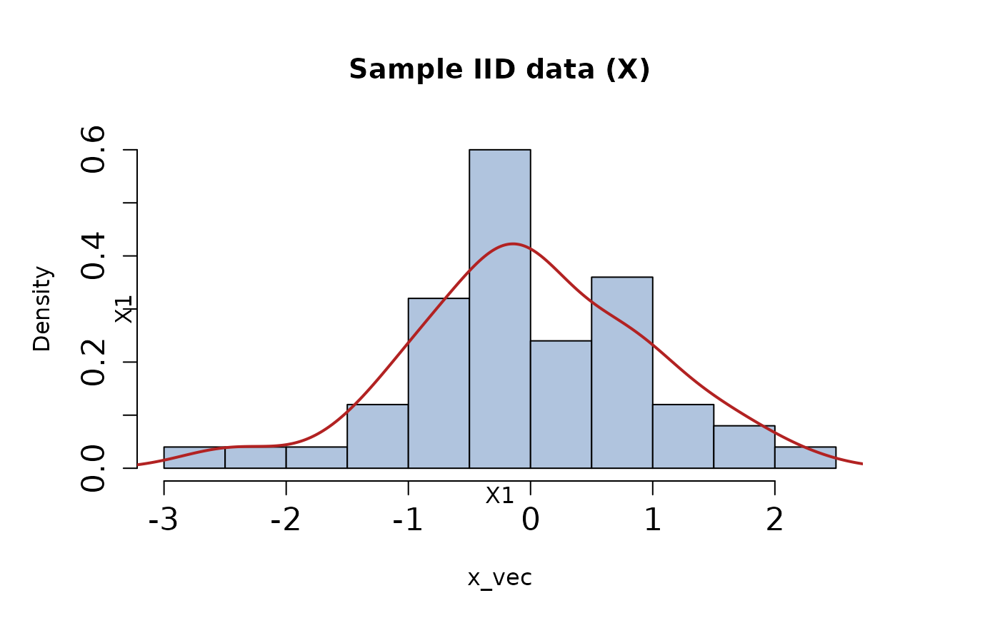
# Copula-based Examples
if (requireNamespace("copula", quietly = TRUE)) {
library(copula)
# Gaussian copula with Normal margins
cop <- normalCopula(param = 0.5, dim = 3)
margins <- list(
list(dist = "norm", params = list(mean = 0, sd = 1)),
list(dist = "norm", params = list(mean = 1, sd = 2)),
list(dist = "norm", params = list(mean = -1, sd = 0.5))
)
x<-simulate_IIDdata(5, "copula", list(dim = 3, copula = cop, margins = margins))
plot(x)
# Gumbel copula with mixed margins
gumbel_cop <- gumbelCopula(param = 2, dim = 4)
mixed_margins <- list(
list(dist = "norm", params = list(mean = 0, sd = 1)),
list(dist = "gamma", params = list(shape = 3, rate = 1)),
list(dist = "exp", params = list(rate = 2)),
list(dist = "unif", params = list(min = 0, max = 1))
)
x <- simulate_IIDdata(10, "copula", list(dim = 4, copula = gumbel_cop, margins = mixed_margins))
plot(x)
# Large-dimensional Gaussian copula with exponential margins
d <- 20
exp_margins <- replicate(d, list(dist = "exp", params = list(rate = 1)), simplify = FALSE)
rho <- 0.3
Sigma <- matrix(rho, nrow = d, ncol = d); diag(Sigma) <- 1
norm_cop <- normalCopula(P2p(Sigma), dim = d, dispstr = "un")
x_large <- simulate_IIDdata(10, "copula", list(dim = d, copula = norm_cop, margins = exp_margins))
dim(x_large) # should be 10 x 20
plot(x)
}
 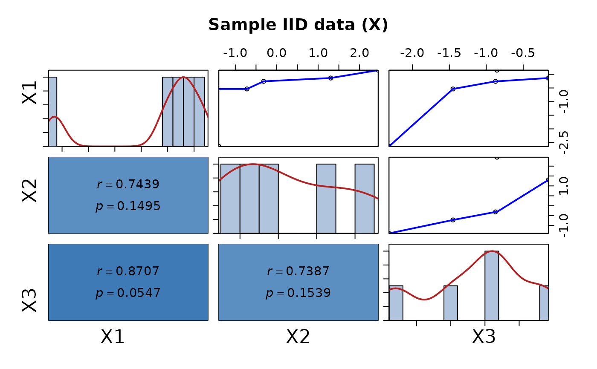
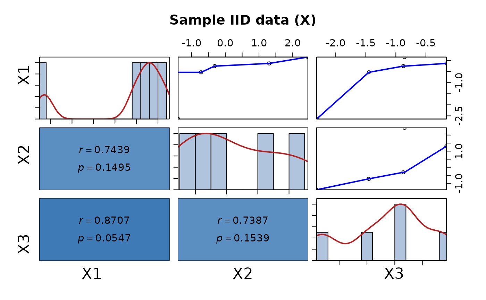
 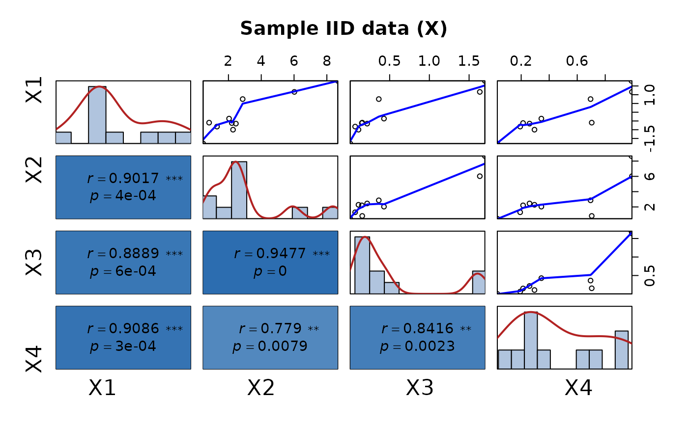
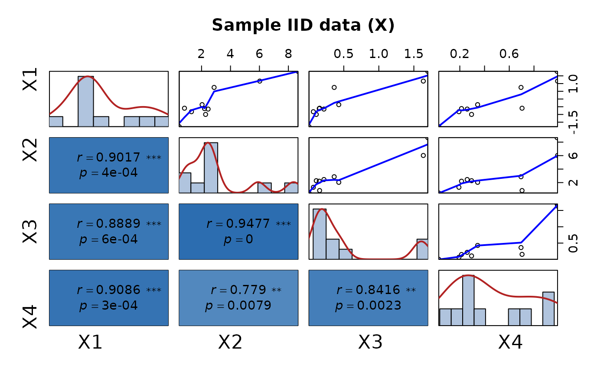